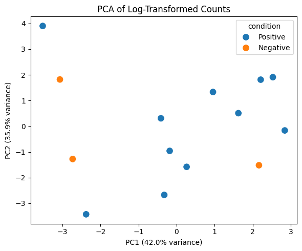
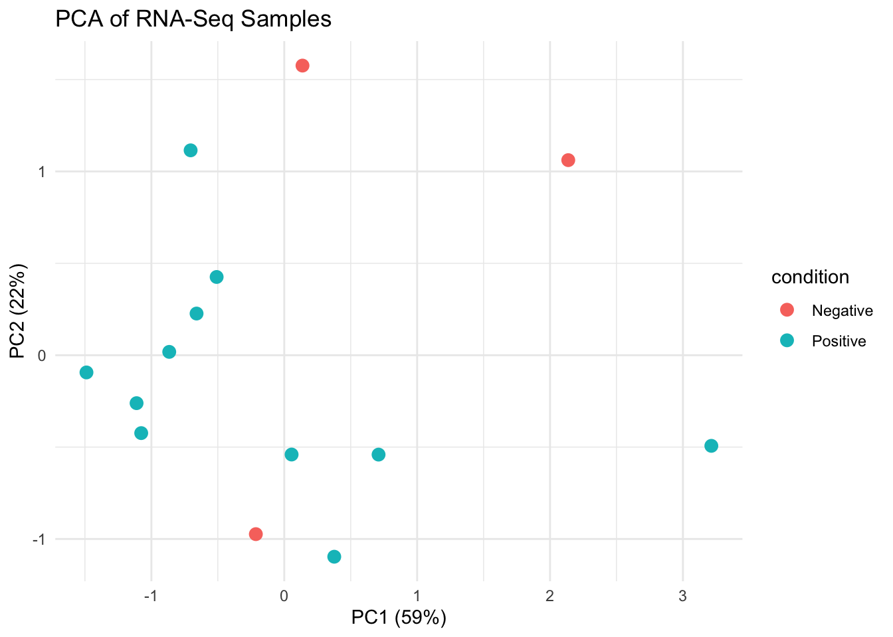

Q&A 3 How do you perform PCA to explore sample similarity?
3.1 Explanation
Principal Component Analysis (PCA) is a standard technique to explore global sample differences based on gene expression patterns. In RNA-Seq, PCA is often applied after log-transformation (e.g., log2(count + 1), rlog(), or vst()).
It helps identify:
- 🔍 Clusters of biologically similar samples
- ⚠️ Potential outliers or mislabeled conditions
- 📊 The amount of variance explained by key components
3.2 Python Code
import pandas as pd
import numpy as np
import seaborn as sns
import matplotlib.pyplot as plt
from sklearn.decomposition import PCA
# 🔄 Set seed for reproducibility
np.random.seed(42)
# 🔹 Load data
counts = pd.read_csv("data/demo_counts.csv", index_col=0)
metadata = pd.read_csv("data/demo_metadata.csv")
log_counts = np.log2(counts + 1)
# 🎯 PCA
pca = PCA(n_components=2)
pca_result = pca.fit_transform(log_counts.T)
pca_df = pd.DataFrame(pca_result, columns=["PC1", "PC2"])
pca_df["sample_name"] = log_counts.columns
pca_df = pca_df.merge(metadata, on="sample_name")
# 📊 Plot
plt.figure(figsize=(6, 5))
sns.scatterplot(data=pca_df, x="PC1", y="PC2", hue="condition", s=100)
plt.title("PCA of Log-Transformed Counts")
plt.xlabel(f"PC1 ({pca.explained_variance_ratio_[0]:.1%} variance)")
plt.ylabel(f"PC2 ({pca.explained_variance_ratio_[1]:.1%} variance)")
plt.tight_layout()
plt.show()
3.3 R Code
library(tidyverse)
library(DESeq2)
library(ggplot2)
# 🔄 Set seed for reproducibility
set.seed(42)
# 🔹 Load and transform
counts <- read_csv("data/demo_counts.csv") %>%
column_to_rownames("gene")
metadata <- read_csv("data/demo_metadata.csv")
dds <- DESeqDataSetFromMatrix(countData = counts, colData = metadata, design = ~ condition)
rlog_counts <- rlog(dds)
# 🎯 PCA plot
pca_data <- plotPCA(rlog_counts, intgroup = "condition", returnData = TRUE)
percentVar <- round(100 * attr(pca_data, "percentVar"))
# 📊 Plot
ggplot(pca_data, aes(PC1, PC2, color = condition)) +
geom_point(size = 3) +
labs(title = "PCA of RNA-Seq Samples",
x = paste0("PC1 (", percentVar[1], "%)"),
y = paste0("PC2 (", percentVar[2], "%)")) +
theme_minimal()
Sample_01 Sample_02 Sample_03 Sample_04 Sample_05
SEC24B-AS1 0.7183764 1.3717481 0.4156507 1.02934610 0.8621451
A1BG -1.2882010 -0.8695495 -1.2162496 0.07920678 -1.4217020
A1CF 4.3879484 4.7552744 4.5169602 4.02417352 4.7566223
GGACT 2.4002760 2.0134330 2.0322561 2.21584055 2.2472710
A2M 9.2848548 9.2848548 9.2848548 9.28485478 9.2848548✅ Takeaway: PCA helps you understand how samples cluster before any statistical testing. Always log-transform your data and set a seed for reproducibility.